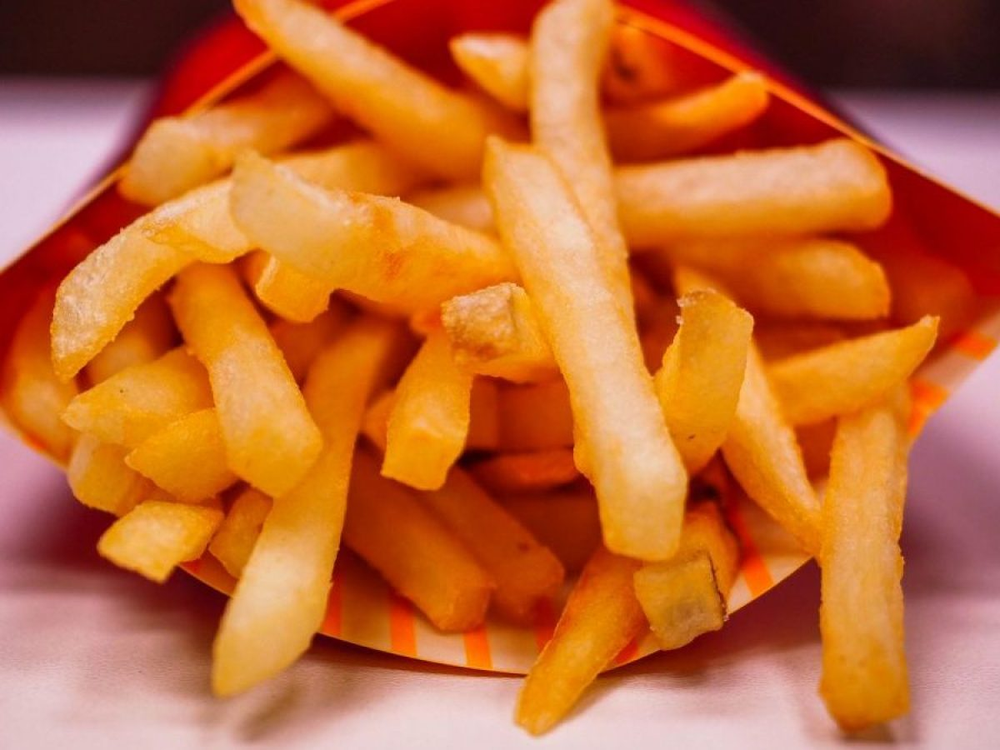

Papas fritas
Ingredientes

- 4 papas amarillas grandes
- 2 tazas de aceite vegetal
- Sal, al gusto
- 1 1/2 taza de mayonesa
- 2 cucharadas de pasta de rocoto molido
- 1 cucharadita de hojas de huacatay finamente picadas (black mint) Sal y pimienta, al gusto
- Sal y pimienta, al gusto
- Sal y pimienta negra recién molida (al gusto)
1 cucharadas de pasta de ají amarillo
Método
Preparación
- Para preparar las papas fritas: Pela las papas y córtalas en tiras finas. Trata que todas salgan parejas, más o menos del mismo tamaño. Pon todas las papas cortadas en un recipiente y cubre con agua para que eliminen el almidón. Repite un par de veces hasta que el agua salga limpia. Escurre las papas y seca bien con servilletas de papel..
- Calienta el aceite en una sartén grande sobre fuego medio-alto. Cuando esté caliente, agrega una parte de las papas y cocina, moviendo de vez en cuando, hasta que las papitas estén doradas. Retíralas del aceite con una espumadera y ponlas en un plato cubierto con varias capas de servilletas de papel para que escurra el aceite. Sazona las papitas con sal y repite hasta que todas las papas estén fritas.
- Para preparar las salsas: En un recipiente, combina 1 taza de mayonesa con la pasta de rocoto, las hojas de huacatay, sal y pimienta al gusto.
- En otro recipiente combina la 1/2 taza de mayonesa con la pasta de ají amarillo. Salpimienta al gusto.
- Sirve las papitas fritas con estas dos salsas.